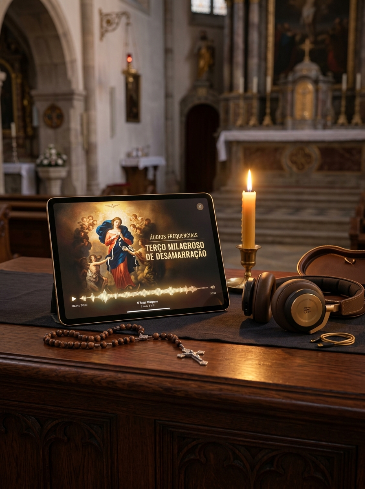

O envio do seu acesso à Novena das 9 Palavras está a ser preparado...
⚠️ NÃO FECHE ESTA PÁGINA! A sua solicitação ainda não foi totalmente concluída e o envio pode ser interrompido.
LEIA A MENSAGEM SAGRADA ABAIXO para confirmar a desamarração completa e libertar o seu acesso de imediato:
ESTA COLEÇÃO DE ÁUDIOS FREQUENCIAIS NÃO ESTÁ DISPONÍVEL FORA DESSA PÁGINA AQUI
ÁUDIOS FREQUENCIAIS
TERÇO MILAGROSO DE DESAMARRAÇÃO
Muitas vezes, quando você vai se deitar, a mente acelera, o cansaço do dia pesa e fica difícil concentrar-se nas orações. Esta coleção exclusiva traz as 9 Palavras Sagradas e o Terço de Nossa Senhora gravados em frequências harmónicas sacras de 432Hz e 528Hz, para que você apenas coloque os fones de ouvido ao dormir e deixe a voz de desamarração atuar no seu subconsciente e no ambiente da sua casa durante o sono, acordando em profunda paz e com os seus caminhos espirituais totalmente destravados.

Esta secção disponibiliza gravações sonoras complementares para momentos de recolhimento pessoal, acessíveis apenas a quem integra a comunidade de oração. Não se encontra disponível para compra individual.
Se acedeu a esta página através de uma ligação enviada por e-mail e o conteúdo não surge de forma completa, por favor abra novamente o endereço a partir da mensagem original.